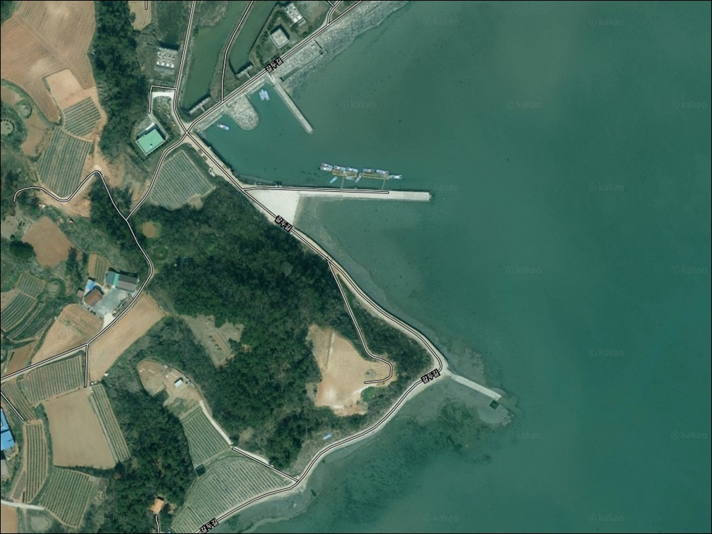
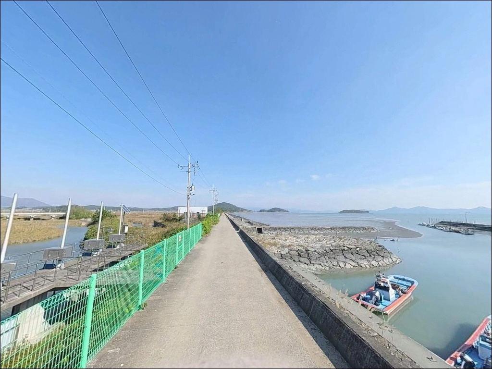
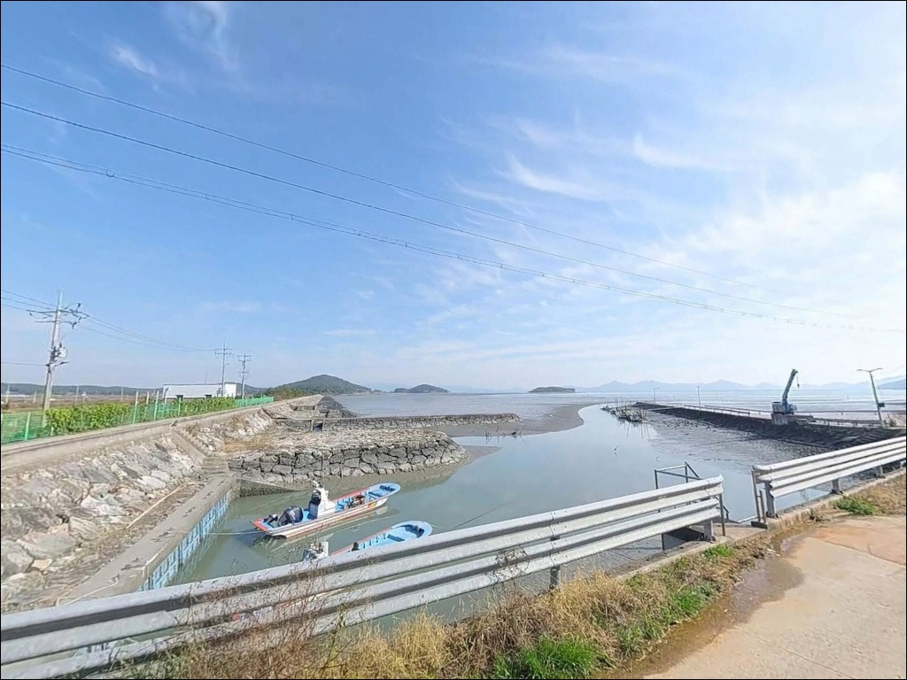
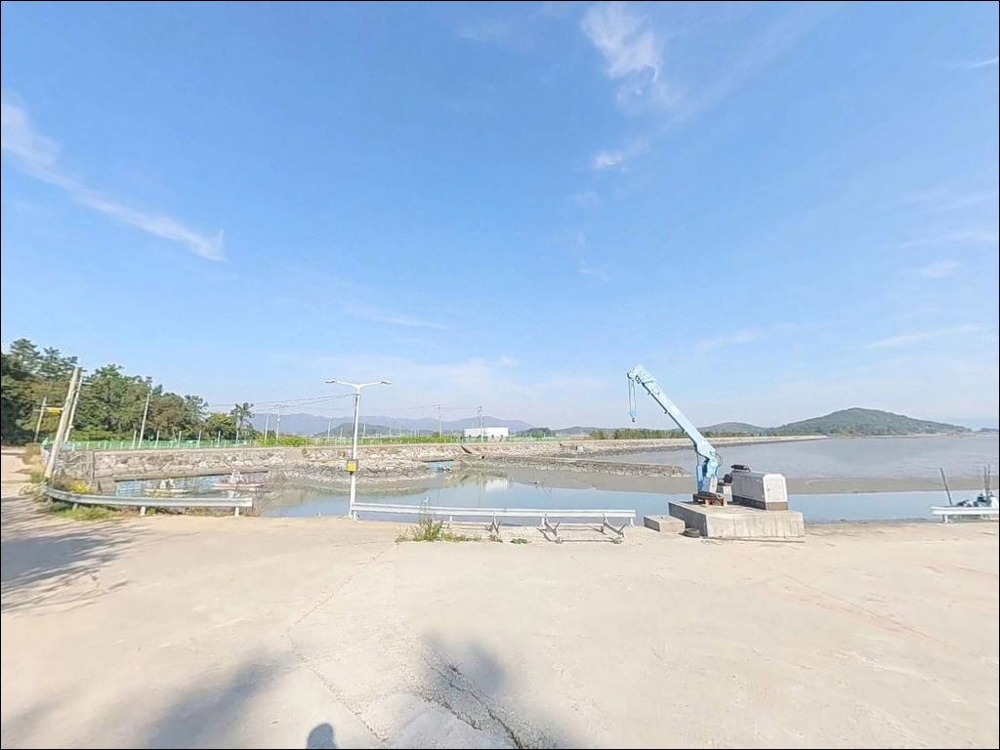
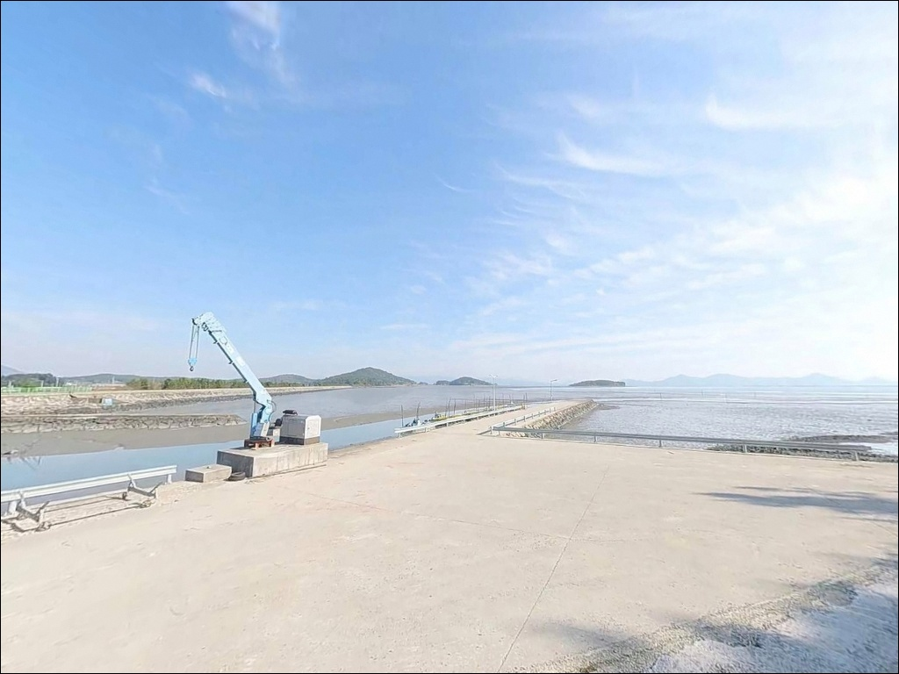
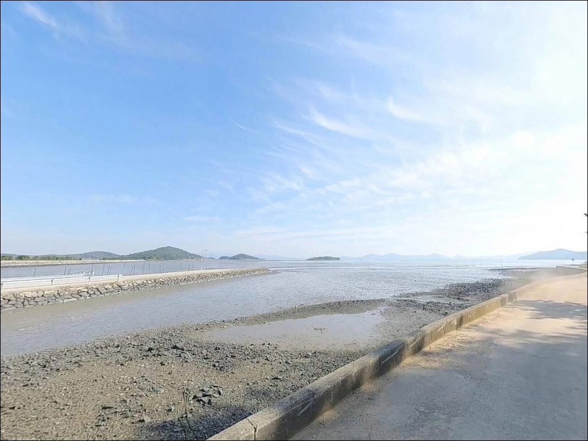
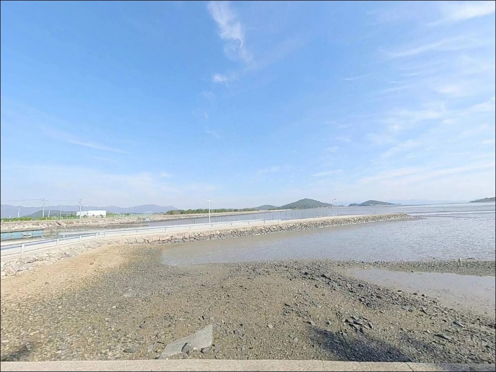
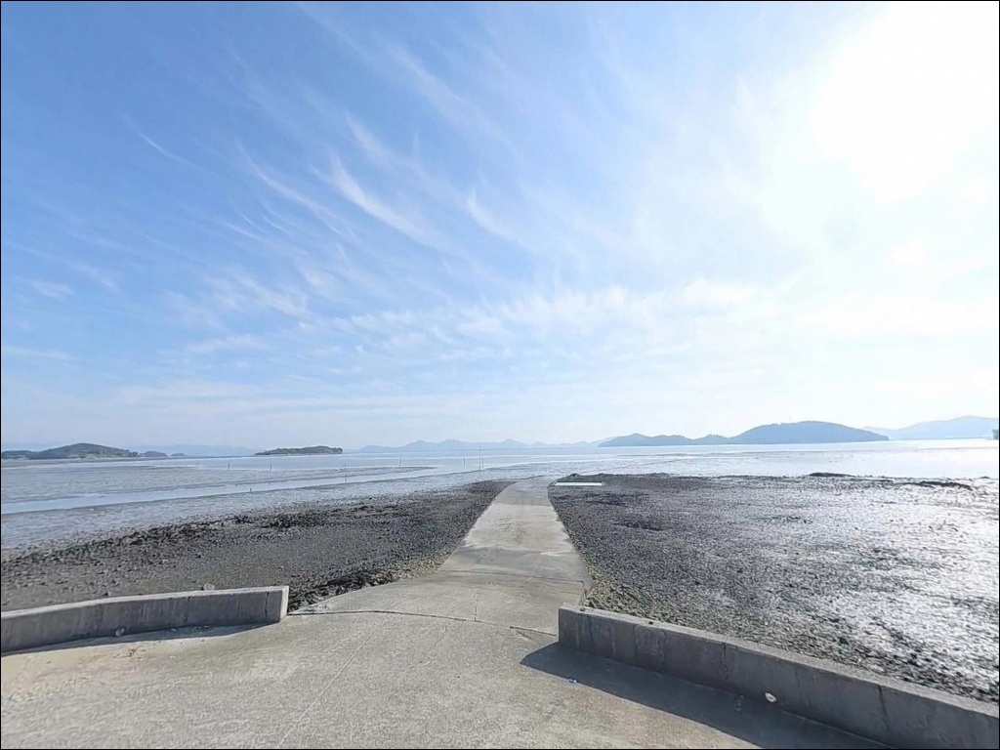
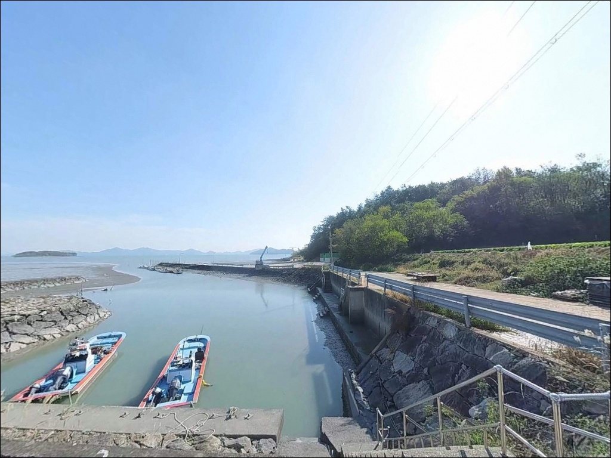

금당리방파제, 전남 해남군 해안 절경과 함께 대어 낚는 바다 차박 낚시 장소
이 페이지에는 광고(제휴 링크 포함)가 있으며, 광고 링크를 통해 구매하면 운영자가 판매 수익 또는 수수료를 받을 수 있습니다. 포인트 사진: 카카오맵 스카이뷰·로드뷰. 이 페이지의 지도·사진 이미지는 카카오맵의 실제 서비스 이미지와 다를 수 있습니다.


포인트 안내
금당리방파제 (금당항)
전남 해남군 북일면 금당리 12-14
강진만 내만이라 파도 걱정 없다는 판단으로
물때 확인을 건너뛰는 낚시인이 많습니다.
내만형 방파제는 조류 흐름이 약한 구조가 아니라,
만조·간조 전환기에 조류가 집중되는 구조입니다.
이 타이밍을 벗어난 시간대에는
어떤 채비를 써도 입질 빈도가 낮아지는 편입니다.
금당리방파제는 전남 해남군 북일면 금당리 해안에
자리한 어촌정주어항으로,
강진만 서안 수역을 정면으로 마주하는
내만권 방파제입니다.
외항 석축 발판이 안정적이고
방파제 입구 공터 주차 여건이 갖춰져 있어,
생활낚시와 짧은 차박 체류에
무난하게 들어올 수 있는 포인트입니다.
이 글은 금당리방파제의 진입 동선, 차박 체류 조건,
낚시 방식별 지형 조건에 집중합니다.
조황 단정이나 특정 어종 보장은
이 글의 범위에 포함되지 않습니다.

1. 진입 동선과 차량 접근 여건
금당리방파제는 북일면 소재지(흥촌리)에서
금당길을 따라 해안 방면으로 진입합니다.
도로는 왕복 1차로 수준이나
교행 가능 구간이 확보된 평탄한 마을도로이며,
급경사나 비포장 구간 없이 방파제 입구까지
차량이 직접 진입하는 구조입니다.
방파제 시작 지점에 넓은 시멘트 공터가 있어
대형 SUV나 캠핑카도
회차에 어려움이 없는 편입니다.
주차는 방파제 입구 좌측 공터가 1차 후보이며,
방파제 몸통 측면 일렬 주차도
낚시 자리와 인접해 활용도가 높습니다.
전체적으로 진입 난이도가 낮은 편에 속하는 포인트이며,
초행 낚시인도 별도의 위성지도 사전 확인 없이
진입 가능한 구조입니다.
다만 방파제 내 어민 작업 동선과
어구 적재 구간은 주차 전 반드시 확인합니다.

2. 차박 환경과 야간 체류 여건
금당리방파제는 마을과 맞닿은 생활권 포인트입니다.
완전한 고립형 차박지가 아니라
어촌 마을 인근에 조용하게 주차하고
낚시 후 대기하는 형태의 체류에 적합합니다.
민가 밀집도가 낮아 야간 차량 통행은 거의 없는 편이며,
차 안에서의 취침 자체는 조용한 분위기에서 가능합니다.
항구 내에 가로등이 설치되어 있어
방파제 진입부까지는 기본 시야 확보가 됩니다.
다만 방파제 끝단으로 갈수록 광량이 부족해지므로
야간 낚시 시 헤드랜턴과 보조 랜턴을
각각 준비해야 합니다.
강진만 내만 특성상 외해 직접 파고 영향은 적지만,
서풍·북서풍이 강한 날에는
바람이 방파제 외항 측으로 직접 유입되는 날씨가 있습니다.
출발 전 기상 예보를 확인하는 것이
야간 체류 쾌적도를 좌우하는 조건입니다.


3. 주변 편의시설 및 인프라 현황
방파제 진입부 마을 회관 인근과
항구 입구 방면에 공중화장실이 위치합니다.
생활 편의시설은 방파제 바로 인근에는 없으며,
반경 3km 내 북일면 소재지(흥촌리)에서
보급을 마치고 진입하는 편이 효율적입니다.
흥촌리 농협하나로마트와 소규모 식당이
가장 가까운 생활 거점입니다.
반경 10km권으로 이동하면
완도군 군외면 남창 방면에 닿을 수 있습니다.
24시간 편의점, 대형 낚시점, 주유소 등
포괄적인 인프라를 이용할 수 있어
장거리 이동이 필요한 물품은
이 동선을 활용하는 편이 낫습니다.
응급 상황을 대비해 연료·비상약품·식수를
출발 전에 갖추고 오는 것이 기본입니다.
방파제 인근에서 즉시 해결 가능한 시설은
공중화장실 외에는 단정하기 어렵습니다.

4. 진입 전 반드시 챙겨야 할 준비사항
금당리방파제에서 가장 먼저 확인해야 할 것은
물때입니다.
강진만은 서남해 내만 특성상
조수간만의 차가 크고,
만조 전후 1~2시간이 조류가 활발해지는
핵심 시간대입니다.
바다타임에서 북일면 기준 물때를 확인하고
만조 시각을 중심으로 입장 시각을 맞추는 것이
이 포인트 기본 전략입니다.
출조 전에 북일면 일대 조황 검색을 꼭 해보시길 권합니다.
내만형 방파제 특성상 계절과 수온에 따라
어종 활성도 차이가 크므로,
현장 조황 흐름을 먼저 파악하고 이동하는 편이
헛걸음을 줄이는 방법입니다.
방파제 외항 석축은 만조 시 일부 구간이
물에 잠기는 경우가 있어
이끼에 의한 미끄러움에 주의해야 합니다.
구명조끼는 방파제 끝단 낚시 시 반드시 착용하며,
야간 낚시 전 밝은 시간대에 발판 상태를
먼저 확인해 두는 것이 안전한 방법입니다.
어민 어구(그물, 통발)가 적재된 구간에는
주차와 낚시 자리 선정을 피하고,
내만권 특성상 쓰레기는 전량 수거해
귀가하는 것이 기본 매너입니다.

5. 물때를 알아야 달라지는 강진만 방파제 낚시 조건
금당리방파제는 동쪽 방향으로 뻗은 메인 방파제와
북쪽 소형 선착장이 맞물리는 구조입니다.
외항 쪽은 석축으로 마감되어 발판이 안정적이며,
내항은 콘크리트 안벽 구조로 되어 있습니다.
바닥은 뻘과 모래가 주를 이루며
방파제 기초부 인근은 수중 암초와 해조류가
분포하는 혼합 저질입니다.
수심은 내만 위치 특성상 만조 기준
방파제 끝단 기준 4~6m 수준입니다.
외해 직결형 방파제보다 수심이 얕은 편이나,
만조·간조 전환 직전 2~3시간 구간에
조류 흐름이 집중되는 시간대에는
방파제 끝단과 꺾임 지점이 어종 활동을
가장 많이 기대해볼 수 있는 자리입니다.
강진만 서안 해역에서 기대해볼 수 있는 어종은
도다리·붕장어·숭어·감성돔이 기본이며,
조류 전환기에는 농어의 방파제 끝단 반응도
기대해볼 수 있는 지형 조건입니다.
조황은 계절과 수온에 따라 차이가 크므로
최신 정보는 가기 전에 꼭 검색해 보시기 바랍니다.


6. 포인트에 어울리는 낚시 스타일
원투낚시가 이 포인트에서 가장 기본적인 방식입니다.
방파제 끝단 외항 방면으로 20~60m 범위를 공략하며,
바닥이 비교적 평탄한 뻘·모래 혼합 저질이라
채비 운용이 안정적인 편입니다.
청갯지렁이·참갯지렁이를 미끼로
바닥층을 노리는 방식이 이 지형에 맞습니다.
찌낚시는 방파제 외항 중층과
방파제 석축 주변부를 공략하기에 적합합니다.
강진만 일대 해역에서 찌낚시로
감성돔과 숭어를 기대해볼 수 있으며,
만조 전후 1~2시간이
활성도가 올라오는 시간대입니다.
릴찌낚시와 민장대를 상황에 따라 병행하는 방식도
이 포인트 구조에 잘 맞습니다.
루어낚시는 방파제 끝단과 석축 구간에서
그럽웜·지그헤드·미노우 플러그 채비로
농어와 숭어를 노려볼 수 있습니다.
썰물 초기 조류 전환 타이밍이
방파제 끝단 루어 반응이 살아나는 구간이며,
야간에는 갈치 반응도 기대해볼 수 있는
지형 조건입니다.

7. 대안 포인트와 플랜 B 동선
금당리방파제 여건이 여의치 않을 때
첫 번째로 이동을 고려해볼 곳은
남창 방면 방파제입니다.
금당리방파제에서 남쪽으로 약 8~10km 거리이며,
강진반도와 고금도·약산도 사이 수로를
앞에 두어 어자원이 집중되는 구조입니다.
낚시 자료가 다수 존재하는 알려진 포인트라
조황 정보 확인도 수월한 편입니다.
차박 여건이 더 넓은 공간을 원한다면
북일면 내동리 방면 해안 도로 주변을
대안으로 살펴볼 수 있습니다.
바다 조망이 금당리방파제보다 트여 있는
구간이 형성되어 있으며,
생활 소음도 낮은 편입니다.
해남 북일면·북평면 해안선 전체에
소형 방파제와 선착장 포인트가 이어져 있어,
기상이나 바람 방향에 따라
내만형과 외해형 포인트를 선택하는
동선 운용이 가능한 해역입니다.
금당리방파제를 기점으로 삼고
상황에 따라 인근 포인트를 옮겨 다니는 방식이
이 해역을 효율적으로 활용하는 방법입니다.

물때 한 번만 맞추면
금당리방파제가 달리 보입니다
원투낚시로 바닥을 조용히 탐색하거나
찌낚시로 만조 전후를 기다리는 낚시 스타일이라면
금당리방파제의 내만형 지형 구조가
잘 맞는 편입니다.
외항 석축 발판이 안정적이고
진입과 주차 여건이 좋아
특별한 사전 답사 없이도 들어오기 쉬운 포인트입니다.
반면 사리 전후 조류가 강한 날이나
간조가 깊어지는 시간대에 입장하면
수심이 낮아지고 채비 운용이 어려워집니다.
물때 확인, 북일면 조황 검색,
출발 전 보급 완료,
이 세 가지를 갖추고 가는 것이
이 포인트에서의 시간을 알차게 쓰는 방법입니다.
조용한 강진만 어촌 마을에서
만조 물때를 기다리며 방파제 끝단에 채비를 던지고,
해가 지면 차 안에서 조용히 하룻밤 머무는 출조를
원하는 낚시인에게 잘 맞는 포인트입니다.